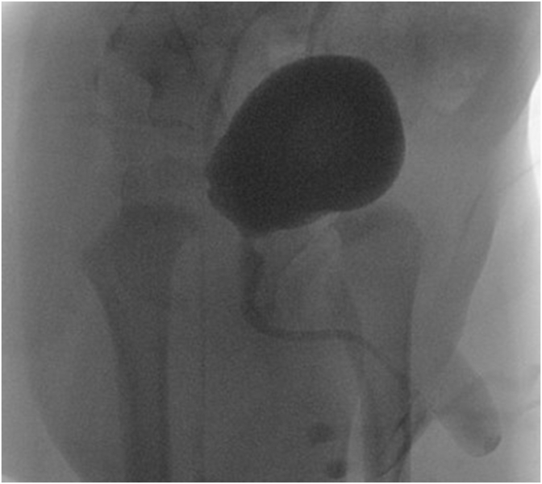
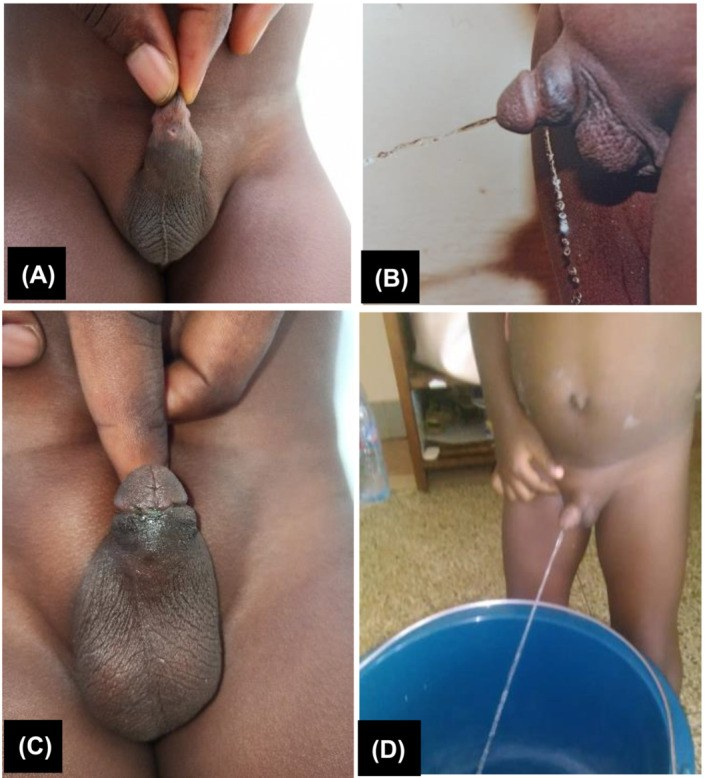
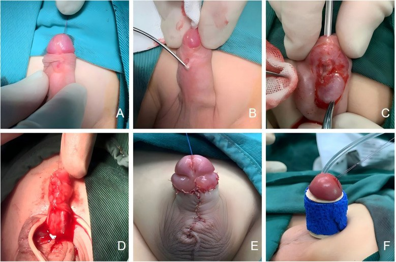

679 — Rò niệu đạo–da ở trẻ sau tạo hình niệu đạo: chẩn đoán, thời điểm mổ lại & kỹ thuật / Urethrocutaneous fistula
Tags: pattern:ro pattern:dong-tieu-chia-doi vung:nieu-dao vung:sinh-duc-nhi anatomy:nieu-dao-truoc protocol:VCUG-RUG-sieu-am
Mức chắc chắn (certainty): tổng hợp y văn (literature synthesis) — số liệu lấy trực tiếp từ toàn văn mở (ghi PMCID từng chỗ); ảnh CC BY dùng/ghép được, ảnh CC BY-NC-ND giữ nguyên bản. Chưa gắn một ca nguyên văn duy nhất của nhóm.
1. Tổng quan bệnh học – cơ chế hình ảnh
- Rò niệu đạo–da (urethrocutaneous fistula — UCF) là đường thông có biểu mô lót giữa lòng niệu đạo và da, làm nước tiểu thoát ra ngoài song song với lỗ tiểu → dòng tiểu chia đôi (bifid stream) hoặc nhiều tia. Đây là biến chứng hay gặp nhất sau mổ hypospadias và cũng gặp sau cắt bao quy đầu, chấn thương, áp-xe niệu đạo, sỏi niệu đạo.
- Phân loại theo nguồn gốc (quan trọng vì tiên lượng khác nhau):
- Mắc phải sau tạo hình niệu đạo (acquired, phổ biến nhất): trong một loạt 425 bệnh nhân sửa rò sau mổ hypospadias, 71 ca (16,7%) bị rò tái phát (Yang F et al., Transl Androl Urol 2022, PMC9547158).
- Mắc phải sau cắt bao quy đầu / chấn thương / áp-xe: loạt 35 trẻ ở Cameroon: 74,28% rò nhỏ, > 70% chỉ cần đóng đơn thuần, kết quả tốt 91,4% sau theo dõi trung bình 91,85 tháng; triệu chứng xuất hiện trung bình 3,68 tháng sau cắt bao quy đầu (Mbouche LO et al., BJUI Compass 2024, PMC11250727).
- Bẩm sinh (congenital anterior urethrocutaneous fistula — CAUCF): cực hiếm, khoảng 50 ca trong y văn; đa số nằm rãnh quy đầu/thân dương vật, chỉ 3 ca ở ngã ba dương vật–bìu (penoscrotal) được báo cáo (Batie SF et al., Urol Case Rep 2022, PMC8683582).
- TẠI SAO rò hình thành (cơ chế mô học – giải phẫu): niệu đạo tân tạo sống nhờ mạng mạch của vạt che phủ (dartos, tunica vaginalis, vạt da). Ba yếu tố làm đường khâu hở ra thành lỗ rò: (1) thiếu máu đầu vạt/đường khâu, (2) căng do thiếu tổ chức che, (3) tăng áp lực trong lòng do hẹp/tắc niệu đạo phía xa hoặc do dẫn lưu bằng ống thông niệu đạo kém. Hệ quả lâm sàng: rò là "van an toàn" của chỗ tắc phía xa — sửa rò mà không giải quyết hẹp phía xa thì rò tái phát.
- TẠI SAO dẫn lưu bằng ống thông lại bảo vệ: so sánh 195 trẻ có rò, nhóm rò bội nhiễm (multiple UCF) 61 ca (31,3%) có dẫn lưu bằng ống thông niệu đạo thấp hơn (19,7% vs 47,0%) và dẫn lưu bằng ống thông bàng quang qua da (vesicostomy) cao hơn (80,3% vs 53,0%) — vesicostomy: OR 6,574 (95% CI 2,720–15,891); dịch niệu đạo mủ sau sửa rò lần đầu: OR 2,723 (95% CI 1,214–6,109) (Tian G et al., Front Pediatr 2023, PMC10072279).
- TẠI SAO ảnh X-quang (VCUG/RUG) lại "chốt": dùng thuốc cản quang i-ốt bơm ngược/ngược dòng → cản quang đi theo đường có lòng nên chỉ đường rò thật mới hiện; niệu đạo phía xa không ngấm thuốc là dấu hiệu gợi ý teo/hẹp/tắc phía xa (ca "skip lesion" bên dưới là ví dụ kinh điển). Trên siêu âm, đường rò là dải giảm âm xuyên thành niệu đạo → da, có thể thấy dòng chảy Doppler khi bơm nước tiểu/dung dịch.
- Ngưỡng định lượng bắt buộc:
- Rò nhỏ ≤ 2 mm, phát hiện sớm ≤ 14 ngày sau rút ống thông → có thể tự đóng; tỷ lệ đóng 53,8–62,5% ở các loạt chính; đặt lại ống thông + kháng sinh + kháng cholinergic đạt 66% (6/9) trong một thử nghiệm (Simanjuntak BC et al., World J Urol 2026, PMC13275626).
- Rò ≥ 4 mm ở rãnh quy đầu, hoặc có hở quy đầu (glans dehiscence) → cần tạo hình niệu đạo (TIP/Mathieu), không đóng đơn thuần.
- Thời điểm mổ: ≥ 6 tháng sau mổ trước; nếu sẹo còn cứng/viêm → chờ thêm 3–6 tháng (PMC9547158).
- Rò tái phát theo kỹ thuật: TIP 24,1%, Mathieu 14,3%, thắt đôi (double ligation) 15,1%, đóng kinh điển 16,7%, trap-door 22,2% (PMC9547158).
2. Mẫu hình + chẩn đoán phân biệt theo vị trí (gamut)
Mẫu hình cốt lõi: dòng tiểu chia đôi/tia phụ khi đi tiểu + lỗ nhỏ trên da dương vật rỉ nước tiểu, lỗ tiểu chính vẫn có (rãnh quy đầu, thân dương vật, ngã ba dương vật–bìu, bìu, đáy chậu).
Gamut theo VỊ TRÍ (thứ tự hay gặp sau mổ hypospadias):
- Rãnh quy đầu (coronal): hay nhất; rò nhỏ thường đóng được; nếu hở quy đầu phải mổ lại bằng TIP/Mathieu.
- Thân dương vật (penile shaft): thường do thiếu vạt che hoặc căng đường khâu.
- Ngã ba dương vật–bìu / bìu / đáy chậu: hiếm; với CAUCF đây là thể "skip lesion" — niệu đạo phía xa có thể teo, dễ bị chẩn đoán nhầm thành hẹp niệu đạo.
- Nhiều lỗ rò (multiple UCF): 31,3% trong loạt 195 trẻ — nguy cơ cao hơn với vesicostomy và dịch mủ sau sửa lần đầu (mục 1).
Gamut theo CƠ CHẾ (mnemonic "FISTULA"): Failure of flap (thiếu máu vạt) · Infection (mủ, áp-xe) · Stricture phía xa (tăng áp lực) · Tension (đường khâu căng) · Urethral diverticulum (túi niệu đạo) · Large defect / glans dehiscence · Anomaly bẩm sinh (CAUCF, niệu đạo đôi).
3. Bảng so sánh phân biệt (ma trận đối chiếu)
| Thực thể (entity) | Hình ảnh điển hình | Chốt vào (rule-in) | Chốt loại (rule-out) | Gợi ý xác nhận |
|---|---|---|---|---|
| Rò niệu đạo–da (UCF) | Tia tiểu phụ từ lỗ trên da; VCUG/RUG: cản quang thoát ra ngoài tại một điểm, niệu đạo phía xa vẫn hiện (trừ khi kèm hẹp) | Lỗ có biểu mô + tia tiểu phụ + cản quang thoát đúng vị trí lỗ | Không có tia phụ, chỉ phồng da khi tiểu → nghĩ túi niệu đạo | Soi niệu đạo + calibration; test xanh methylene |
| Túi niệu đạo (urethral diverticulum) | Phồng/thừa da mặt bụng dương vật, xẹp sau tiểu, tiểu nhỏ giọt sau khi tiểu xong | Khối phồng xẹp theo thì tiểu + cản quang đọng trong túi | Có tia tiểu phụ ra da → rò | VCUG thì đi tiểu + siêu âm |
| Hở quy đầu (glans dehiscence) | Miệng niệu đạo rộng, tụt về rãnh, không có đường hầm riêng | Toàn bộ đường khâu quy đầu hở, không có lỗ rò riêng | Có lỗ rò có biểu mô tách biệt với lỗ tiểu → rò thật | Khám + soi; xử trí như tạo hình lại quy đầu |
| Hẹp niệu đạo phía xa (distal stricture) | Niệu đạo hẹp đều/đoạn, cản quang không qua được, bàng quang căng | Không đặt được ống thông cỡ tuổi qua chỗ hẹp | Qua được ống thông + niệu đạo đều → không hẹp | RUG + calibration; phải loại trừ TRƯỚC khi sửa rò |
| CAUCF thể "skip lesion" | Rò ở ngã ba dương vật–bìu, VCUG: chỉ thấy niệu đạo đoạn gần, không thấy niệu đạo dương vật phía xa | Lỗ tiểu bình thường + rò gần + niệu đạo xa KHÔNG ngấm thuốc | Niệu đạo xa ngấm thuốc liên tục → rò đơn thuần sau mổ | MRI/soi niệu đạo; thì mổ phải tạo hình cả đoạn thiểu sản |
| Niệu đạo đôi (urethral duplication) | Hai lòng niệu đạo chạy song song, một lỗ tiểu lệch vị trí trên dương vật | Hai lòng riêng biệt trên RUG/MRI | Một lòng niệu đạo + một đường rò → UCF | RUG nghiêng + MRI; soi niệu đạo |
| Áp-xe/rò sau chấn thương hoặc sỏi | Khối viêm, sỏi cản quang trong niệu đạo, rò ở mặt bụng | Sỏi/thay đổi viêm quanh + tiền sử chấn thương | Không sỏi, không viêm, sau mổ hypospadias → rò do mổ | X-quang niệu đạo + siêu âm; nội soi lấy sỏi |

Bé trai 15 tháng, CAUCF thể gần: bàng quang đầy cản quang, niệu đạo đoạn gần hiện, thuốc thoát ra ngoài tại ngã ba dương vật–bìu, không thấy niệu đạo dương vật phía xa = hình ảnh "skip lesion" (niệu đạo xa thiểu sản/teo) — đây là cạm bẫy: nếu chỉ đóng "lỗ rò" mà không tạo hình đoạn thiểu sản thì thất bại [Batie SF et al., Urol Case Rep 2022, PMC8683582, CC BY-NC-ND 4.0 — nguyên bản, không cắt/ghép].Hai kiểu trình bày lâm sàng kinh điển

(A) Rò nhỏ vùng rãnh quy đầu ở bé trai 6 tuổi; (B) tia tiểu chia đôi khi đi tiểu; (C) lỗ rò đã đóng ngày hậu phẫu 10; (D) dòng tiểu một tia bình thường [Mbouche LO et al., BJUI Compass 2024, PMC11250727, CC BY 4.0].- Dấu hiệu vàng: nhìn trẻ đi tiểu (không chỉ hỏi bố mẹ) — dòng chia đôi chỉ lộ khi có dòng nước tiểu.
- Đo kích thước lỗ rò bằng que calibration: quyết định theo dõi (< 2 mm, sớm) hay mổ (≥ 4 mm, hoặc hở quy đầu).
4. Protocol chụp + hệ phân độ/điểm chuẩn hóa
Chẩn đoán (thứ tự thực hành):
- Khám + quan sát đi tiểu (dòng chia đôi/tia phụ), calibration bằng que nong/ống thông mềm để đánh giá niệu đạo phía xa và đường kính lỗ rò.
- Siêu âm dương vật: dải giảm âm xuyên thành, đánh giá túi niệu đạo kèm theo; siêu âm sau đi tiểu nếu nghi túi thừa.
- VCUG (voiding cystourethrography) — thì đi tiểu mới đánh giá đúng; ghi rõ vị trí lỗ rò, có/không cản quang ở niệu đạo phía xa, có hẹp/túi thừa.
- RUG (retrograde urethrography) với ống thông nhỏ đặt qua lỗ tiểu khi cần xác định chiều dài đoạn thiểu sản (CAUCF thể gần) hoặc hẹp.
- Soi niệu đạo (urethroscopy) khi RUG không kết luận hoặc nghi niệu đạo đôi.
Phân tầng xử trí theo kích thước – thời điểm – vị trí:
| Nhóm | Tiêu chí | Xử trí | Tỷ lệ thành công / tái phát |
|---|---|---|---|
| Theo dõi | Rò ≤ 2 mm, phát hiện ≤ 14 ngày sau rút ống thông, không nhiễm trùng | Đặt lại ống thông + kháng sinh + kháng cholinergic, theo dõi | Đóng 53,8–62,5%; đặt lại ống thông 66% (6/9) |
| Đóng đơn thuần | Rò nhỏ, rãnh quy đầu/thân, mô quanh mềm | Cắt đường rò + đóng 2 lớp, có vạt che | Tái phát 16,7% (đóng kinh điển) |
| Tạo hình niệu đạo | Rò ≥ 4 mm, hở quy đầu, rò tái phát, mô xơ | TIP hoặc Mathieu + vạt che (dartos/tunica vaginalis) | Tái phát 24,1% (TIP), 14,3% (Mathieu) |
| Sửa phức tạp | Rò lớn, nhiều lỗ, đã mổ nhiều lần, thiếu da | Vạt da bìu/inguinal, Cecil-Culp thì hai | Tái phát thấp hơn nhưng nhiều thì mổ |
Nguyên tắc kỹ thuật (5 chữ "W"):
- Wait: ≥ 6 tháng sau mổ trước; sẹo cứng → thêm 3–6 tháng.
- Waterproof: đóng kín nước 2 lớp, lớp che có mạch nuôi (không ghép mô tự do).
- Wide: cắt bỏ toàn bộ đường rò có biểu mô + làm mới mép.
- Without tension: không căng, có thể dùng vạt.
- Way out: bảo đảm không hẹp phía xa trước khi đóng; ống thông 7–14 ngày (CAUCF: 12–14 ngày).
flowchart TD
A[Tre co dong tieu chia doi sau mo nieu dao] --> B[Kham + quan sat di tieu + calibration]
B --> C{Ro con moi duoi 14 ngay va duoi 2 mm?}
C -->|Co| D[Dat lai ong thong + khang sinh + theo doi 4 tuan]
D --> E{Con ro?}
E -->|Khong| F[Theo doi 2 tuan - 6 thang - hang nam]
E -->|Co| G[Danh gia lai bang VCUG/RUG]
C -->|Khong| G
G --> H{Nieu dao phia xa thong?}
H -->|Khong| I[Tao hinh doan hep/thieu san truoc - khong chi dong lo ro]
H -->|Co| J{Ro to hon 4 mm hoac ho quy dau?}
J -->|Co| K[TIP hoac Mathieu + vat che - ong thong 7-14 ngay]
J -->|Khong| L[Dong 2 lop don thuan + vat che]
K --> F
L --> F
I --> F
Theo dõi sau mổ: khám + xem dòng tiểu ở 2 tuần, 6 tháng, sau đó hàng năm (PMC9547158); tái phát muộn vẫn xảy ra vì sẹo co kéo — tỷ lệ chung 16,7% ở nhóm sửa rò sau hypospadias.
5. Biến thể bình thường và cạm bẫy
- Biến thể "bình thường" dễ nhầm: lỗ tiểu lệch nhẹ/ rãnh quy đầu sau mổ tạo tia tiểu hơi lệch nhưng không có lỗ rò; nếp da thừa mặt bụng dương vật (sau mổ) giả "túi thừa". Phân biệt bằng quan sát đi tiểu + calibration, không dựa vào ảnh tĩnh.
- Cạm bẫy 1 — sửa rò mà bỏ qua hẹp phía xa: đây là nguyên nhân tái phát hàng đầu; luôn calibration/VCUG trước khi mổ.
- Cạm bẫy 2 — mổ quá sớm (< 6 tháng): mô còn phù, sẹo chưa mềm → dễ rách lại; chờ 3–6 tháng thêm nếu sẹo cứng.
- Cạm bẫy 3 — coi "hở quy đầu" là rò nhỏ: hở quy đầu cần tạo hình lại quy đầu, đóng đơn thuần sẽ thất bại.
- Cạm bẫy 4 — CAUCF thể gần ("skip lesion"): VCUG không thấy niệu đạo dương vật phía xa → phải tạo hình cả đoạn thiểu sản, không chỉ đóng lỗ rò (ca trong bài).
- Cạm bẫy 5 — chọc/rạch "áp-xe" vùng rò: khối viêm quanh rò có thể là túi niệu đạo bội nhiễm hoặc rò do sỏi; siêu âm trước khi rạch.
- Cạm bẫy ảnh: trên VCUG tư thế chếch, dòng cản quang thoát ra có thể che lấp lỗ rò hoặc giả tạo đường rò do trào ngược vào nếp da — cần ≥ 2 bình diện và thì đi tiểu thật.
6. Tự lượng giá — Blind Quiz (ảnh trơn ngoài, đáp án ẩn trong khối chi tiết)
Ca 1 — Bé trai 15 tháng, tiểu ra hai tia từ nhỏ, không mổ gì trước đó. Nhìn VCUG trước.
- Gợi ý: lỗ tiểu ở vị trí bình thường, không hẹp bao quy đầu, không chấn thương.
- Câu hỏi: Cản quang thoát ra ở đâu? Vì sao niệu đạo dương vật phía xa không hiện? Chẩn đoán và sai lầm cần tránh?
Bấm để hiện đáp án (findings + chẩn đoán)
- Dấu hiệu: bàng quang đầy cản quang, niệu đạo đoạn gần hiện; thuốc thoát ra ngoài tại ngã ba dương vật–bìu; không có cản quang ở niệu đạo dương vật phía xa.
- Chẩn đoán: rò niệu đạo–da bẩm sinh thể gần (CAUCF tại ngã ba dương vật–bìu) với "skip lesion" — đoạn niệu đạo dương vật phía xa thiểu sản/teo nên không ngấm thuốc.
- Sai lầm cần tránh: chỉ đóng lỗ rò — phải tạo hình cả đoạn niệu đạo thiểu sản, nếu không sẽ hẹp/rò lại. Đây là lý do RUG/soi niệu đạo bắt buộc trước mổ.
- Nguồn ảnh: Batie SF et al., Urol Case Rep 2022, PMC8683582 Fig 1, CC BY-NC-ND 4.0.
Ca 2 — Bé trai 6 tuổi, sau cắt bao quy đầu: nhìn ảnh, đoán trước khi mở đáp án.
- Câu hỏi: Mô tả 4 panel (A–D). Vì sao cùng một lỗ rò nhỏ lại có thể chỉ cần đóng đơn thuần? Tiêu chí nào khiến phải tạo hình niệu đạo?
Bấm để hiện đáp án (findings + chẩn đoán)
- Dấu hiệu: (A) lỗ rò nhỏ vùng rãnh quy đầu; (B) tia tiểu chia đôi khi đi tiểu; (C) lỗ rò đã đóng ngày hậu phẫu 10; (D) một tia tiểu bình thường.
- Chẩn đoán: rò niệu đạo–da sau cắt bao quy đầu — rò nhỏ, mô quanh mềm → đóng 2 lớp là đủ.
- Tiêu chí chuyển sang tạo hình niệu đạo: rò ≥ 4 mm, hở quy đầu, rò tái phát, hoặc mô quanh xơ/thiếu da — khi đó TIP/Mathieu (tái phát 24,1%/14,3%) tốt hơn đóng đơn thuần.
- Nguồn ảnh: Mbouche LO et al., BJUI Compass 2024, PMC11250727 Fig 2, CC BY 4.0.
Ca 3 — Rò thân dương vật tái phát lần 2: xem chuỗi mổ và nêu nguyên tắc.

- Câu hỏi: Vì sao phải đặt ống thông qua chính lỗ rò (B)? Vai trò của bước (D) "dùng cân quanh niệu đạo che phủ"? Thời điểm mổ hợp lý?
Bấm để hiện đáp án (findings + chẩn đoán)
- Dấu hiệu: (A) lỗ rò mặt bụng thân dương vật (CAUCF thân giữa); (B) ống thông đi qua lỗ rò để xác định đường và đánh giá niệu đạo phía xa; (C) khâu tấm niệu đạo; (D) dùng cân quanh niệu đạo che phủ đường khâu; (E) tạo hình lại dương vật; (F) băng.
- Chẩn đoán: rò niệu đạo–da thân dương vật (thể CAUCF thân giữa) — xử trí tạo hình niệu đạo 1 thì + lớp che có mạch.
- Vì sao lớp che (D) quan trọng: lớp khâu niệu đạo không có mạch nuôi riêng; vạt cân/dartos che phủ cung cấp mạch và giảm căng → giảm rò tái phát.
- Thời điểm: rò sau mổ → ≥ 6 tháng; sẹo cứng → thêm 3–6 tháng; ống thông 7–14 ngày.
- Nguồn ảnh: Yang C et al., Front Surg 2025, PMC12209207 Fig 1, CC BY 4.0.
Bài liên quan chéo
- 642 – Biến chứng muộn sau chấn thương đường tiết niệu dưới ở trẻ (hẹp niệu đạo sau chấn thương — cùng nhóm "phải loại trừ hẹp trước khi sửa")
- 637 – Chấn thương bàng quang & niệu đạo ở trẻ
- 677 – Chăm sóc & biến chứng ống dẫn lưu trên xương mu ở trẻ (dẫn lưu thay thế khi không đặt được ống niệu đạo)
- 636 – Cấp cứu niệu–sinh dục nhi (áp-xe, chấn thương, dị vật niệu đạo)
- 635 – Dị tật tiết niệu nhi: SFU, VUR, PUV (tắc đường tiểu dưới)
- 638 – Khối bìu ở trẻ (phân biệt khối vùng bìu/ngã ba dương vật–bìu)
Ảnh
679_ro-nieu-dao-da_VCUG_PMC8683582-Fig1-penoscrotal-CCBYNCND.jpg— VCUG, CC BY-NC-ND 4.0 (nguyên bản, không cắt/ghép).679_ro-nieu-dao-da_Anh_PMC11250727-Fig2-truoc-sau-CCBY.jpg— ảnh lâm sàng trước/sau, CC BY 4.0.679_ro-nieu-dao-da_Anh_PMC12209207-Fig1-mo-tung-buoc-CCBY.jpg— chuỗi mổ, CC BY 4.0.- Nguồn + giấy phép từng ảnh:
images/CREDITS.md; link bài gốc:sources.md.
Không dùng để chẩn đoán độc lập khi chưa có người hướng dẫn.